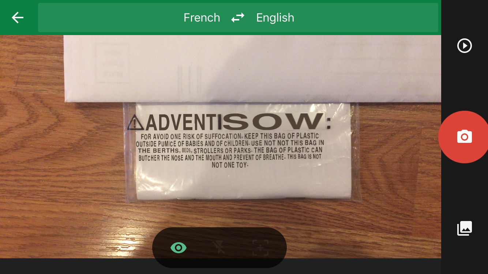

Live Translation
For this homework, I tried to translate the warning text on the last page of an instruction manual. Here is a picture of the manual:
Static translation
For static translation where I took a picture of the text and uploaded it, Google Translate seemed to have no problems – it recognized the words and translated the text to English with near perfect accuracy as seen in the next two screenshots:
Live translation
In live translation, things got a little more interesting – Google Translate seemed to have a hard time translating the text, here are the screenshots of the live translation attempts made by Google Translate:


Live translation will be extremely useful when the user travels to a different place and is unfamiliar with the local language. With this capability, the users will be able to translate the signs on the road or the stores in the neighborhood in real time – if they are driving, they wouldn’t be able to stop and search for the meaning of the text written on the sign.
However, live translation is not always good. The translation keeps changing whenever the user moves a little, especially for long texts – that means even though he/she is looking at the same sign with a slight change in position, the translation refreshes and causes the screen to blink repeatedly. This flashing/blinking might lead to discomfort, disorientation or nausea.
This would lead to the argument that the user should have some degree of control over what’s happening in the live translation. Here are some aspects that I could think of:
- The user might want to listen to the translated text instead of reading it, hence it would be advantageous if the user has the option to hear the translation as well as read it whenever he/she wants to.
- The system should automatically detect the language of the text that needs to be translated. However, the user should have a way to select the language the original text is in and also should be able to control the output language.
- The user should have control over the extent of the text that’s being translated – he/she might want to translate only a part of what they are seeing. Most importantly, they should have the option to easily switch on/off the live translation.
- The user should have the option to pause the live translation to take a look at the translated text closely.
- The user should have a way to switch between alternate translations because a sentence might have different meanings in different contexts.
- The font size of the output translation might be too small for the user and might not be legible – this would happen when the sentence is longer in the translated language when compared to the original language. The user should have a way to zoom in/out of the text displayed. In other words, the user should be able to increase or decrease the size of the translated text.
© Sai Priya Jyothula. All rights reserved.